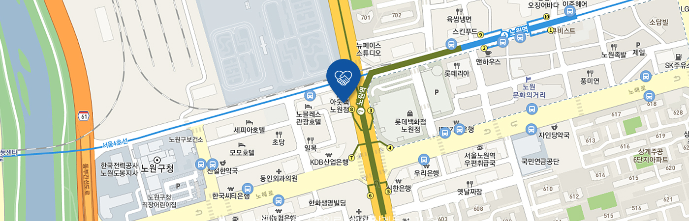

재단소개
선한 마음을 모아 삶을 아름답게 만드는 선의
home
재단소개
재단소개
선의요양병원
사회공헌사업
재단소식
후원·자원봉사 안내
선의의료재단 소개
선의의료재단 소개
인사말
선의정신
연혁
재단CI
조직도
오시는 길
오시는길

서울시 노원구 동일로 1419 (상계동, 8-11층)
TEL
02-000-0000
FAX
02-000-0000
네이버지도 보기
다음지도 보기
구글지도 보기
지하철로 오시는 길
4
4호선 노원역
2번 출구
7
7호선 노원역
8번 출구
롯데백화점 맞은편 직진 후 아웃백 건물 9층
버스로 오시는 길
간선
102, 105, 146
지선
1137, 1138, 1139, 1128, 1129, 1134, 1142, 1144, 1145, 1152, 1154
자가용으로 오시는 길
– 한강남쪽에서 오실 때 :
영동대로 > 동부간선도로 > 의정부방향 > 노원구청방향 > 시티은행(좌회전) > 뉴몬스호텔골목 (우회전) > 선의요양병원주차장
– 강북에서 오실 때 :
북부간선도로 > 동부간선도로 > 의정부방향 > 노원구청방향 > 시티은행(좌회전) > 뉴몬스호텔골목 (우회전) > 선의요양병원주차장